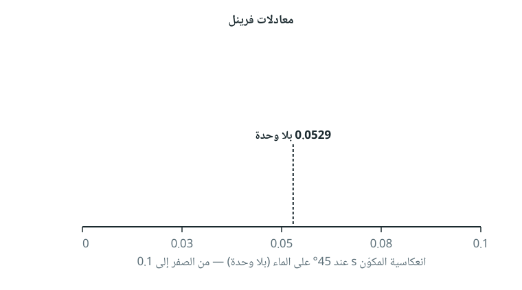

معادلات فرينل
Fresnel equations
معادلات فرينل تعطي نسب الانعكاس والانتقال لضوء يسقط على سطح فاصل بين وسطين: R_s وR_p. تعتمد على زاويتي السقوط والانكسار ومعاملات الانكسار، وتفسر الاستقطاب بالانعكاس وزاوية بروستر.
حين يسقط ضوء على سطح فاصل، ينعكس جزء وينتقل جزء. ومعاملات فرينل تعطي سعة كل منهما لكل استقطاب. للمكوّن المستوي الساقط في مستوى السقوط (p): r_p = (n₂cosθ₁ − n₁cosθ₂)/(n₂cosθ₁ + n₁cosθ₂). وللمكوّن العمودي (s): r_s = (n₁cosθ₁ − n₂cosθ₂)/(n₁cosθ₁ + n₂cosθ₂). والانعكاسية R = |r|². مثال: ضوء يسقط من الهواء (n₁ = 1.000) على ماء (n₂ = 1.333) بزاوية 45.0°: زاوية الانكسار 32.03°، فيكون r_s = (1.000×0.7071 − 1.333×0.8478)/(1.000×0.7071 + 1.333×0.8478) = (0.7071−1.130)/(0.7071+1.130) = −0.230، وR_s = 0.0529.
كيف تعمل الظاهرة؟
الضوء موجة كهرومغناطيسية، والمجال الكهربائي يحرّك الإلكترونات في الوسط الثاني فيولّد موجة ثانوية. وتتراكب الموجة الثانوية مع الموجة الأصلية، فينتج عن ذلك موجة منعكسة وموجة منتقلة. ويعتمد مقدار كل منهما على مقدار عدم التوافق بين مقاومتي الوسطين للمجال الكهربائي، أي على معاملي الانكسار. وعند زاوية بروستر تكون اهتزازات الإلكترونات في اتجاه الموجة المنعكسة، فلا تُشعّ في ذلك الاتجاه، فينعدم الانعكاس للمكوّن p.
العلاقة بالأرقام
r_s = (n₁cosθ₁ − n₂cosθ₂)/(n₁cosθ₁ + n₂cosθ₂)، وR = |r|². مثال: n₁ = 1.000، n₂ = 1.333، θ₁ = 45.0°، θ₂ = 32.03° → r_s = (0.7071−1.130)/(0.7071+1.130) = −0.230، R_s = 0.0529. وللمكوّن p: r_p = (1.333×0.7071 − 1.000×0.8478)/(1.333×0.7071 + 1.000×0.8478) = (0.9426−0.8478)/(0.9426+0.8478) = 0.0529، وR_p = 0.002 80.
مفاهيم متقاربة
يُفرَّق بين معاملات فرينل للسعة والانعكاسية للشدة: الأولى r والثانية R = |r|². ويُفرَّق بين الاستقطاب s وp: s عمودي على مستوى السقوط ولا ينعدم انعكاسه، وp ينعدم عند زاوية بروستر. ويُفرَّد بين الانعكاس الداخلي والخارجي: عند الانتقال من وسط أكثف إلى أقل كثف يحدث انعكاس كلي فوق الزاوية الحرجة. وأخيراً يُفرَّق بين معادلات فرينل والانعكاس المعدني، حيث يكون معامل الانكسار مركباً ويشمل الامتصاص.
حدود التطبيق
المعادلات صالحة للأسطح المستوية الملساء وللأوساط المتجانسة الخواص. ولا تصف الأسطح الخشنة، حيث يتبعثر الضوء بدل أن ينعكس بانتظام. ولا تصف الأوساط ذات الامتصاص دون استعمال معامل انكسار مركّب. ولا تصف الطبقات الرقيقة وحدها، حيث يلزم حساب تراكب الانعكاسات المتعددة.

| الكمية | القيمة | المصدر |
|---|---|---|
| انعكاسية المكوّن s عند 45° على الماء | 0.0529 بلا وحدة | [1] |
| زاوية بروستر للزجاج | 56.31 ° | [1] |
المصادر
- 1 CODATA Value: speed of light in vacuum — NIST — CODATA 2022 recommended values (2024). physics.nist.gov/cgi-bin/cuu/Value?c · اطُّلع عليه 2026-11-22
- 2 CODATA Value: Planck constant — NIST — CODATA 2022 recommended values (2024). physics.nist.gov/cgi-bin/cuu/Value?h · اطُّلع عليه 2026-11-22
- 3 CODATA Value: elementary charge — NIST — CODATA 2022 recommended values (2024). physics.nist.gov/cgi-bin/cuu/Value?e · اطُّلع عليه 2026-11-22
استشهد بهذا المصطلح
الصيغتان مبنيتان من بيانات الصفحة نفسها: العنوان والتاريخ ورابط النسخة المنشورة.
معادلات فرينل — Fresnel equations. (2026). ديوان المعرفة — انفراد. https://infiradev.com/diwan/terms/term-fresnel-equations.html
@misc{term-fresnel-equations2026,
title = {معادلات فرينل},
titleaddon = {Fresnel equations},
howpublished = {{ديوان المعرفة — انفراد} — مرجع علمي عربي},
year = {2026},
url = {https://infiradev.com/diwan/terms/term-fresnel-equations.html},
urldate = {2026-11-26},
note = {مراجعة علمية: hermes (مراجعة معتمدة 2026-11-26)}
}
راجعه: hermes (مراجعة معتمدة 2026-11-26) · 2026-11-26 · آخر تحديث 2026-11-22